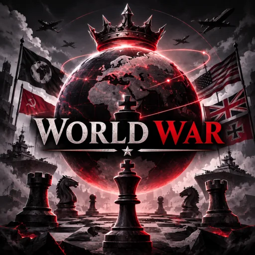

GLOBAL COMMAND SYSTEM
WORLD WAR
Menyiapkan medan perang dunia…
Pemuatan pertama memerlukan internet. Setelah tersimpan, browser dapat memakai cache pada kunjungan berikutnya.
Cara bermain
1. Pilih negara
Ketuk negara di peta, isi nama presiden, lalu pilih “Mulai”.
2. Pilih provinsi asal
Ketuk provinsi milikmu untuk membuka komando.
3. Invasi bertahap
Ketuk provinsi lawan, atur jumlah unit, lalu kirim.
4. Bangun wilayah
Ketuk provinsi milikmu untuk meningkatkan kota, industri, dan pertahanan. Unit militer dikelola sebagai kekuatan nasional.
5. Diplomasi
Ketuk provinsi negara lain untuk menawarkan kerja sama ekonomi, pakta non-agresi, aliansi pertahanan, atau perdamaian. Semua negara memulai dalam keadaan damai.
6. Waktu simulasi
Tahun dimulai 2026. Gunakan ×1, ×2, atau ×4 untuk mempercepat ekonomi dan perkembangan dunia.
7. Peringkat & wilayah
Buka Rank untuk melihat kekuatan militer dan ekonomi semua negara. Buka Wilayah untuk melihat provinsi asal dan hasil invasi.
Darat merebut wilayah bertetangga. Pesawat dapat mengangkut pasukan ke negara mana pun di dunia. Armada dapat melakukan invasi lintas laut. Setiap provinsi harus ditaklukkan satu per satu.